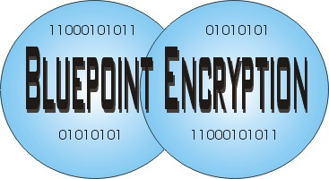

 |
BluePoint Encryption
is a simple, secure, state of the art block encryption algorithm. It
requires minimal processing power and has a low memory footprint. The
algorithm produces an even bit distribution, even when its fed with
small data or homogenus content. This makes it highly resilient against
crypt analysis, and an ideal candidate where safe, secure and
customized encryption is needed. The BluePoint Encryption is available
in source code format in the following languages: 'C', PHP, Perl,
JavaScript, ... All the source code ports are cypher text compatible,
content encoded with one port, can be decoded in other ports.
|
| Bluepoint
Encryption BluePoint was developed as an effort to make an easily embedded encryption source code to most projects. Because BluePoint has no dependencies, and is available in multiple source languages, it is eazy to deploy in any project. For example, in one of our projects we wanted to make an SQL field private. Blupoint help us with one single cut and paste and one call to it. Customizing Blue Point: Contact me: PeterGlen@verizon.net |
| Site
Copyright by Peter Glen, (c) 2007 |